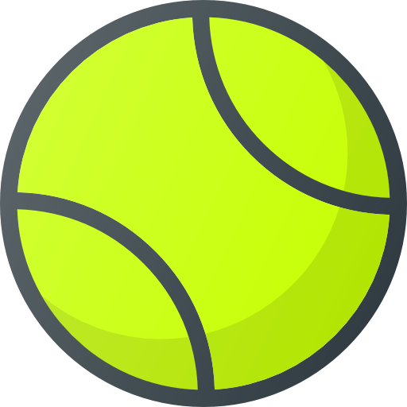
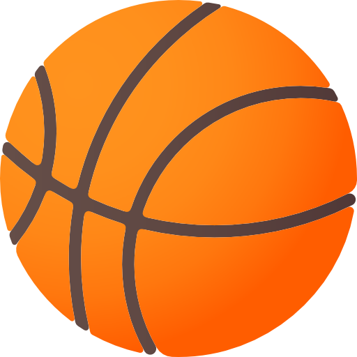
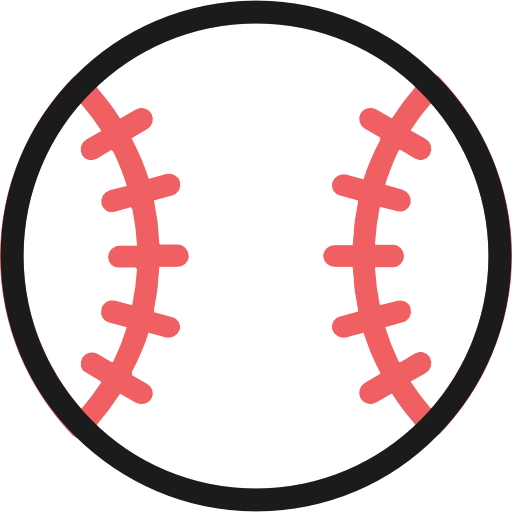
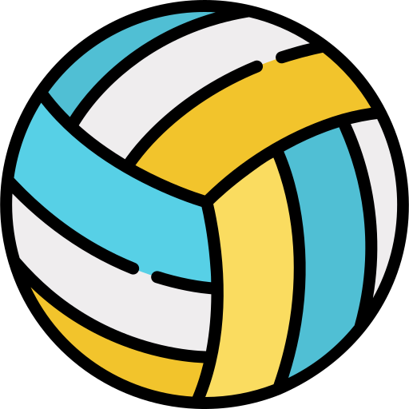

Rebote infinito

Inicia con retardo - Sube y para

Aparece - Estado inicial oculto y aparece

Cambia color de fondo - Multi Etapa

Latidos infinitos

Cambia de fondo, bordes redondeados - infinito
